Table Of Contents
Previous topic
Installing and configuring Eclipse for use with AGX
Installing and configuring Eclipse for use with AGX
Creating the first model and generating code using Eclipse.
Assuming PyDev is installed, select PyDev perspective, click File in main menu and select new -> Pydev Project.
Enter desired name, commonly the egg name, and click finish
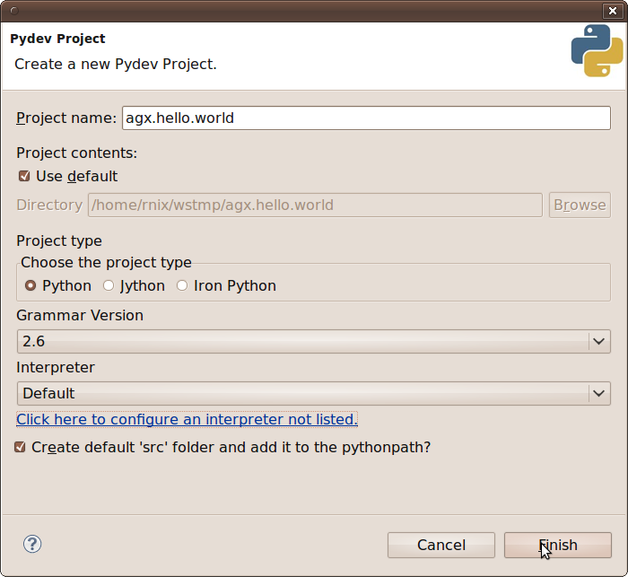Create a new folder named agx inside new project by right clicking on the project in navigator and selecting new -> Folder.
Open the Papyrus perspective and navigate to the newly generated**agx** folder.
Create a new model by right clicking the folder in the navigator and selecting new -> create an empty Model. Select the target folder and enter a name for the model. finally click finish.
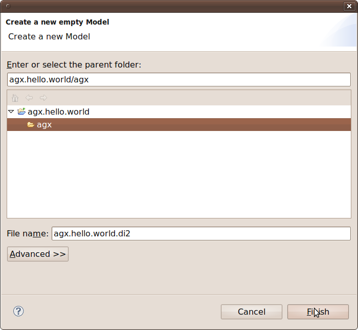Two files are created. The diagram file and a UML file. After refreshing they appear in the navigator.
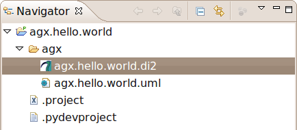Open outline view by clicking Window and selecting Show View -> Outline.
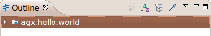The UML model related toolbar can be expanded at the top right.
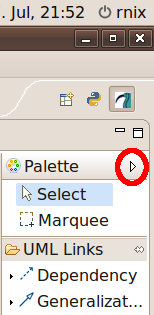Right click on the already created uml file, select Properties and navigate to AGX Properties.
Define the output directory. This is where generated code will be written to.
Define the generator executable. By clicking apply AGX Eclipse will fetch the profiles to be provided by invoking the defined executable (./bin/agx -l, see Pre-Requirements).
Select the pydev profile, and activate it by selecting it and clicking >>.
Click import selected profiles. The selected profiles are now copied to the location of the UML model. (Click F5 to refresh the project explorer view.)
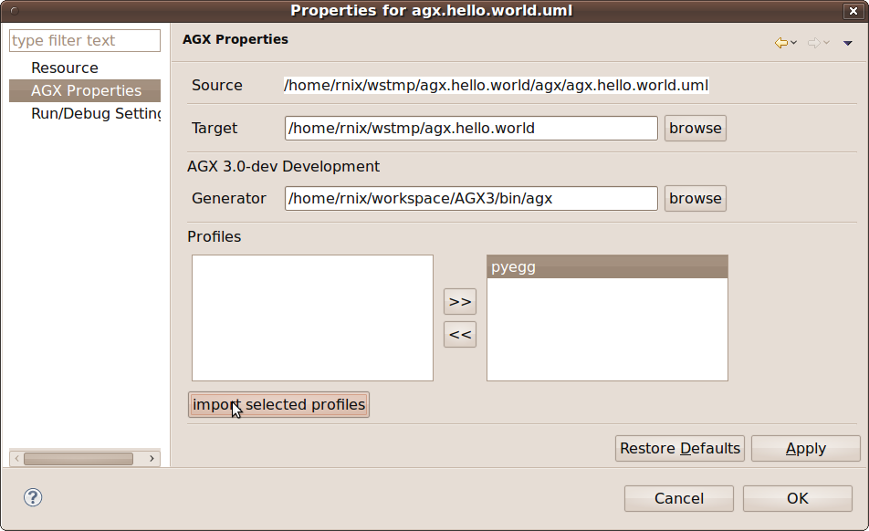The dialogue in the bottom window will display a message.

After refreshing the navigator shows the imported profile next to model. Keep in mind that it is essential to have the model and profile(s) in the same folder. That is because the path to profile is stored in model.
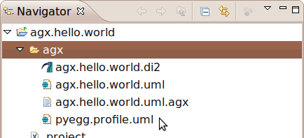Select (by double-clicking) the model in outline (in Helios: project explorer).
Click on the Properties tab at the bottom of the Eclipse IDE and click on the contained Profiles tab.
On the right you find the + icon for applying profiles.
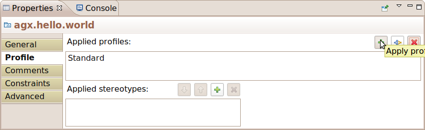Click the + icon, navigate to pyegg.profile.uml in agx folder, select it and click OK.

Choose pyegg profile, click OK and save model (ctrl + s)
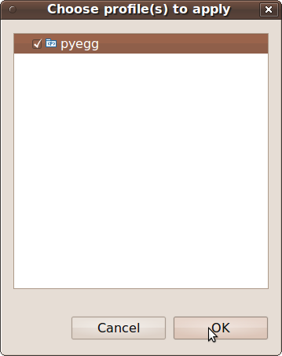In this example we just draw a package generating the structure of a python egg. The remaining profiles and generators are described in Users Documentation.
Expand the Palette, click Package* and paint a package in your diagram.
If you have Helios with Papyrus, you can also use the tooltip that will appear when hovering over the diagrams canvas and choose the symbol for package.
Click Properties Tab -> General and give it the desired egg name. This must be a target package name, preceding names define the namespace packages.
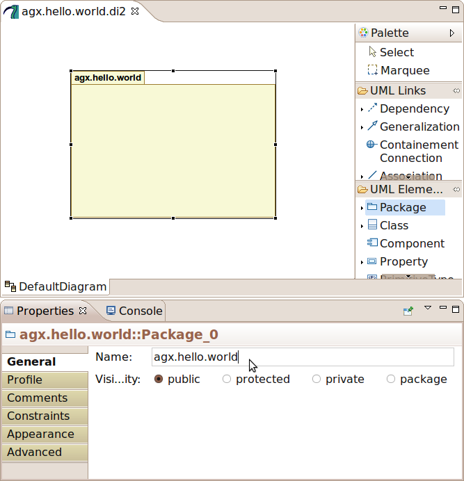Right-click the package in the diagram and select profile -> Apply Stereotype.
Select pyegg profile, click -> and OK.
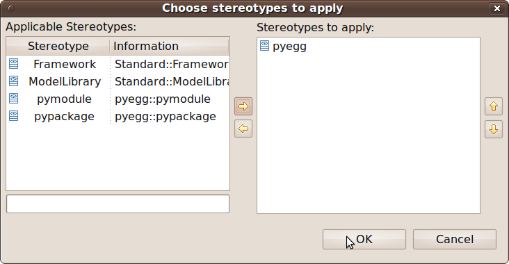pyegg stereotype now apears to be set on package.
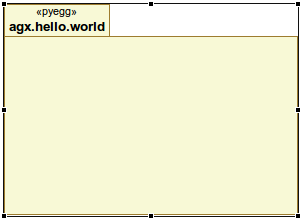Select the package. In the Properties view select the Profile tab. In Applied stereotypes expand the pyegg section.
Now the available tagged values appear for the defined stereotype. Select the tagged value name you want to define a value for and click the + button on the right to add a value.
UML2 does not support multi valued tagged values. In case where enumerations are needed, value is seperated by comma. Refer to Users Documentation for details.

Save changes after defining tagged values.
The Model is now ready to be generated. Right-click the diagram related UML file agx.hello.world.uml in the navigator and select AGX -> generate.
AGX opens a console and prints generator output to it.
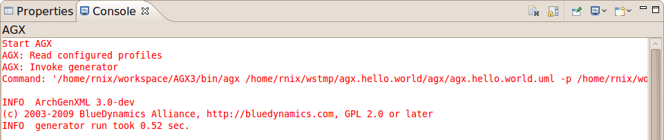After refreshing generated code appears in navigator.
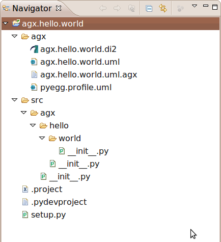Congratulations. You have done your first AGX MDSD project.